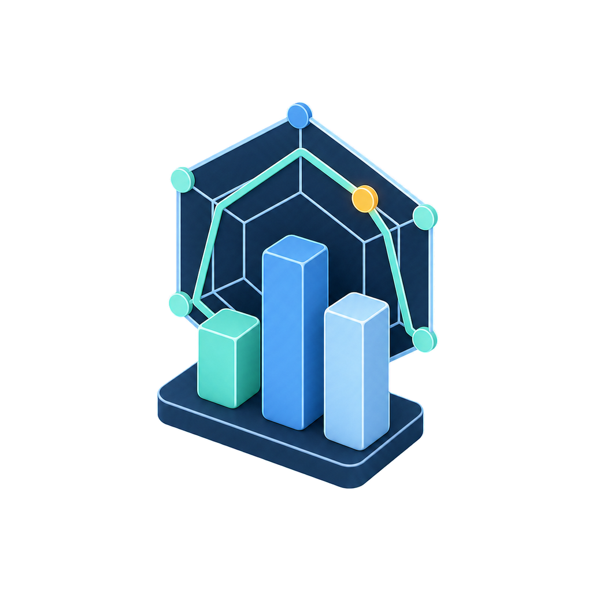
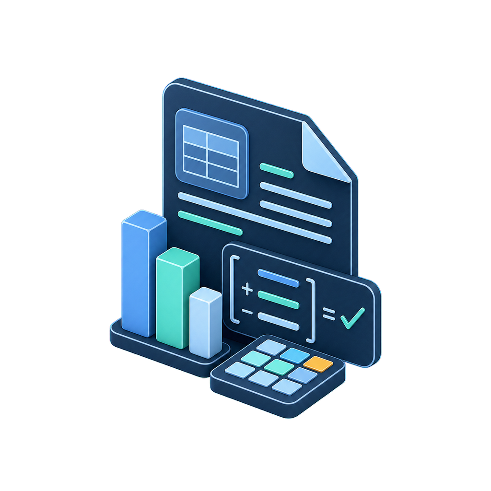
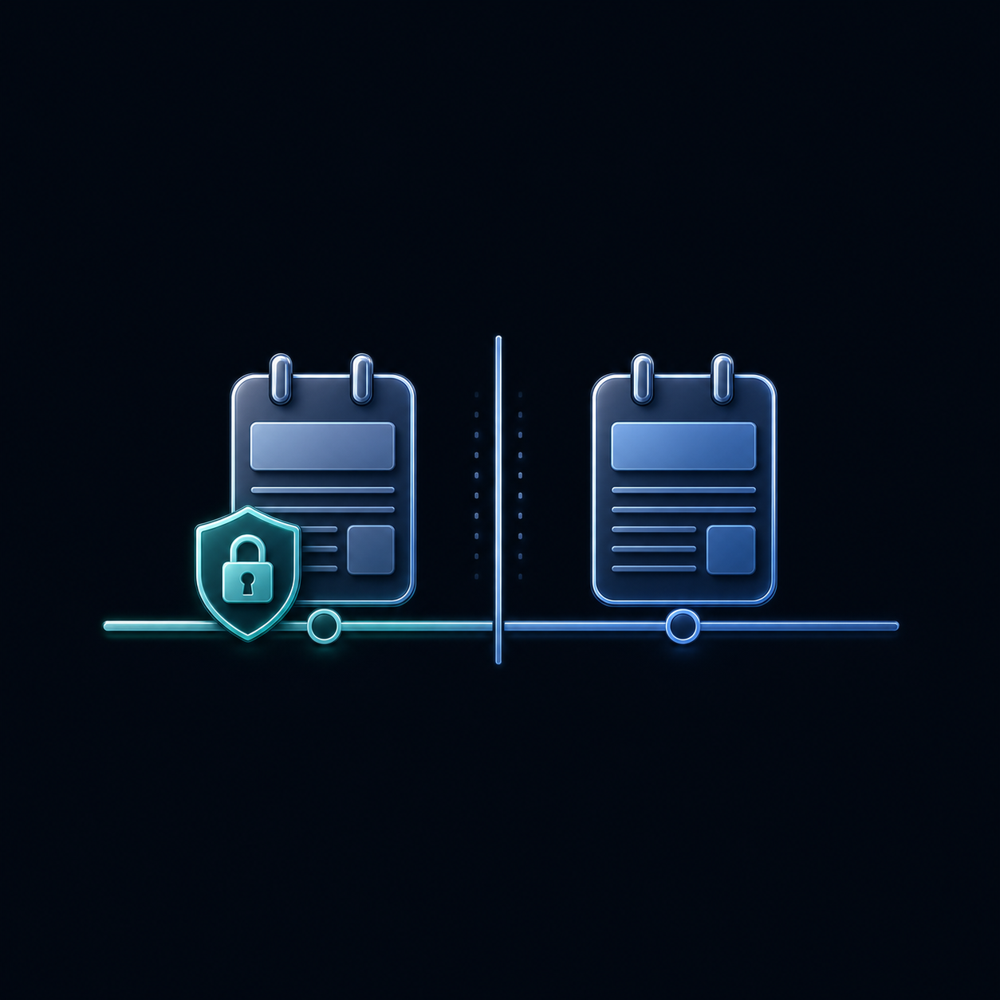
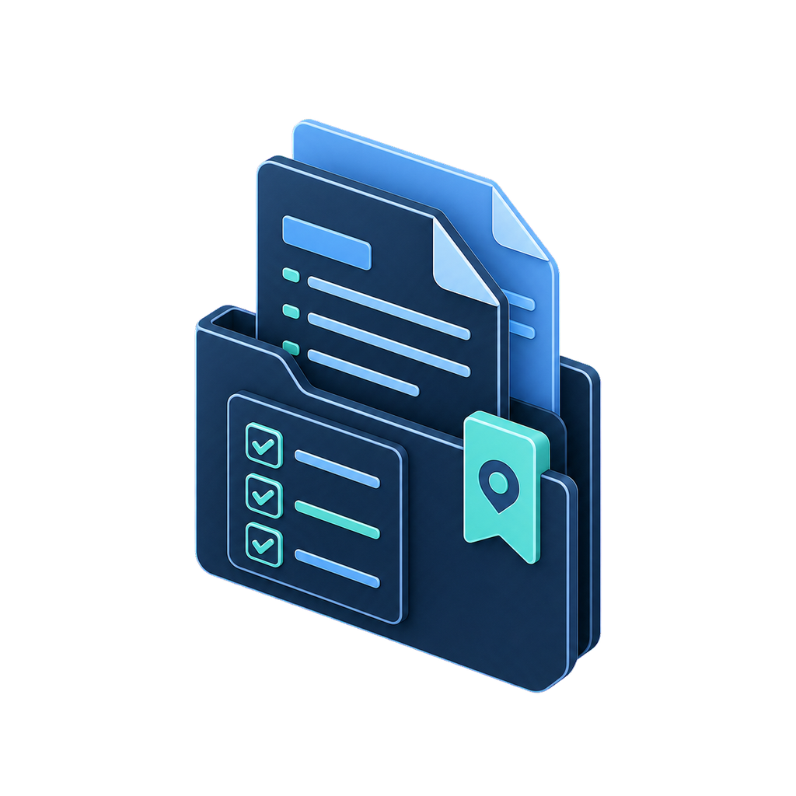
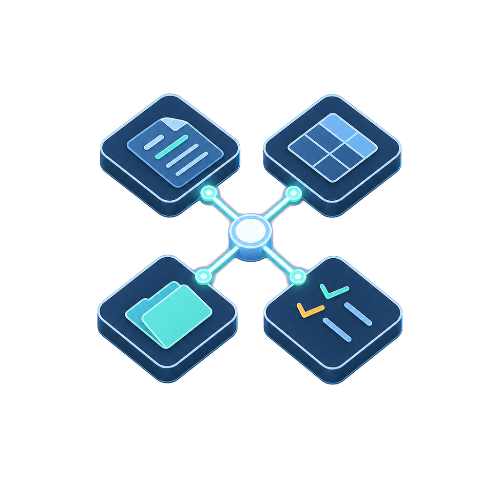
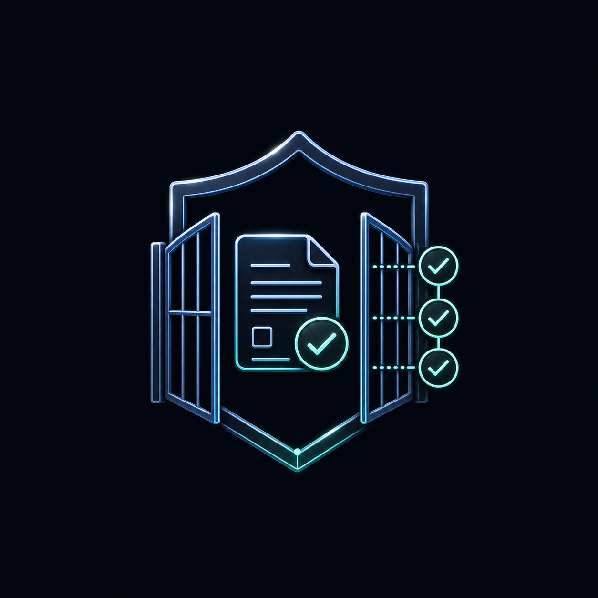
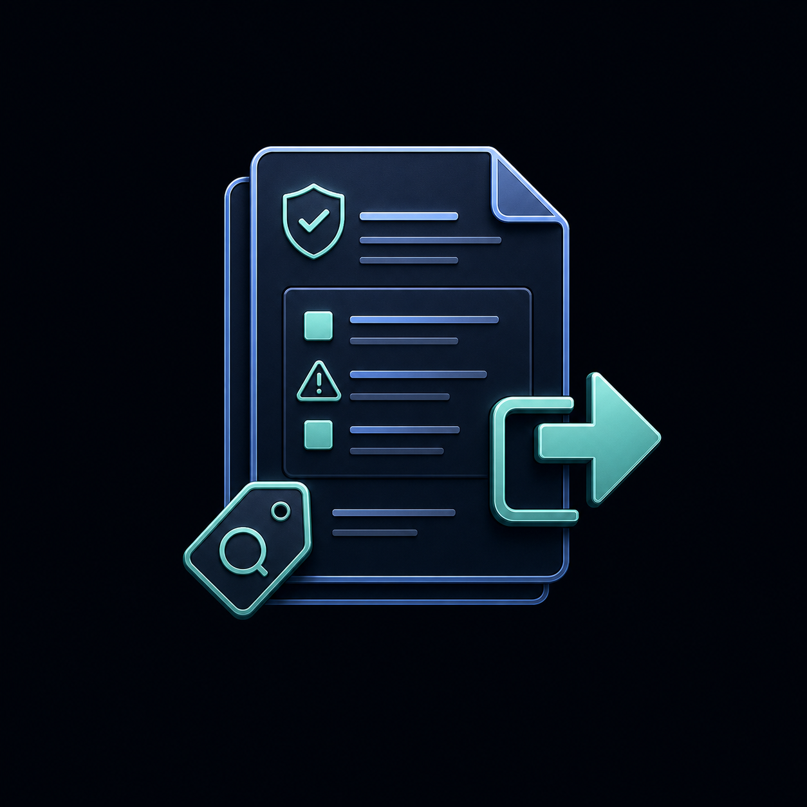
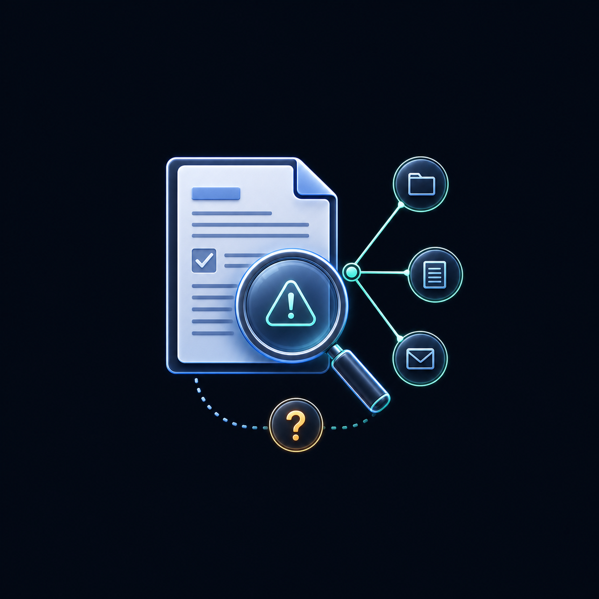
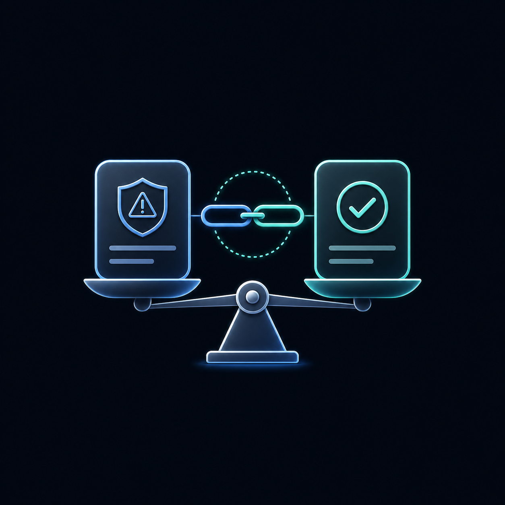

01

多维交叉验证
把财务数字、业务情况、行业变化和公开披露放在一起看。一条线索可能来自几个方面，信息更完整，也更方便判断下一步要看什么。
面向会计师事务所审计项目组，用公开资料交叉验证收入风险， 输出可追溯待核查线索、资料依据缺口与待索取资料。
在业务承接、续聘复核、审计计划阶段， 帮助审计师从分散的公开资料中，系统地提出高质量风险假设， 并明确下一步要向客户索取什么证据。
目标输出：预审风险备忘录、最多 5 项待核查事项、待索取资料清单。 首版先从公开资料开始；每条线索都会写清正常解释和还缺的资料。 后续仍需要函证、检查、访谈或流水核验。
我们把专业规则、语义判断、反证和来源要求放进同一套流程，方便审计师一步步回看。

把财务数字、业务情况、行业变化和公开披露放在一起看。一条线索可能来自几个方面，信息更完整，也更方便判断下一步要看什么。
公开资料回答不了的问题，直接列成下一步要补的资料。这样，线索就能落到销售和收款的具体环节。

风险卡要写清来源、披露时间、原文、财务数字、计算方法和资料缺口。少了关键信息，就先停在草稿里。
提出线索后，再找一遍正常解释和相反资料。如果没找到，也如实写出来；之后由审计师决定保留、降级还是暂缓。

分析时先锁定 T0，只看当时已经公开的资料。后续出现的问询、回复和更正放在 T1 区单独对照，等 T0 记录锁定后再看。
数字计算、日期筛选、字段检查和来源定位交给程序；AI 负责阅读和推理，最后由审计师确认。

来源、日期、页码、单位
财务、业务、行业、披露
引用、公式、禁用词
导出预审风险备忘录系统会依次检查：字段格式、证据 ID、T0 日期、原文、公式、必填项和禁用词，最后交给人工确认。 有关键资料缺失时，线索会留在草稿区。
这里放的是标准股份的本地开发样例。可以先选本次关注的候选指标，再切换年度、查看年报来源、运行 R1 / R2 计算，也可以留下复核意见。 启动本地服务后，点击运行会由后端复算；未启动时，页面会明确保留为本地预览。
每个参与计算的数字都能回到对应年报、披露日期、页码和 evidence_id。资料不全时，风险卡会先停在草稿区。
换年份后，数字、来源文件、披露日期和页码会一起换，不会沿用上一年的数据。
当前做到的：R1、R2 当前工程字段和来源回指已经接入；R2 遇到经营现金流跨期变号或基数过小时会停止同比展示。右侧“候选指标”可勾选本次关注范围。当前后端只运行 R1、R2；R3—R8 会保留为候选项，不会冒充已运行。
显示金额单位：元；计算时仍用原始元值。每条来源都绑定到对应年度年报；披露时间晚于 T0 或定位不全时，对应规则不继续生成候选卡。
| 字段 | 年度 | 数值（元） | 来源编号 | 来源文件与定位 |
|---|
资料要求：缺少 evidence_id、来源文件、披露日期、PDF 页码、印刷页码或原文定位时，页面只提示还缺什么资料，不生成候选卡。
程序完成 R1 / R2 数字计算与来源校验；AI 只在规则触发后输出受证据约束的语义草稿，不替代人工判断。
—
新增大客户、结算周期改变、季节性或行业账期普遍拉长等，均需取得可核验资料后判断。
账龄明细、期后回款、主要客户合同关键结算条款摘要及大额销售明细。
账龄明细表、期后回款记录、主要合同摘要、信用政策变更说明（如有）。取得后，再由审计师结合资料继续判断。
由项目组结合候选认定，考虑账龄分析、期后回款检查、合同关键结算条款和大额异常交易明细。
这里是收入与销售收款循环的候选规则池。勾选表示“本次希望关注”，不等于系统已经计算、也不等于形成风险结论。
运行边界：当前后端会运行 R1、R2；其余项目先保留为候选卡，等待字段、来源和专业复核完成。
三个角色按固定分工配合，程序和审计师负责最后的校验。

按专业规则提出需要进一步了解的情况，并标明资料依据。
不猜测主体动机，也不下舞弊结论。

找可能的正常解释、相反资料和还缺的资料；找不到也会写明。
不为了凑答案而补造事实。
检查文字表述能不能被资料支持，必要时保留、降级或暂缓。
不跳过程序校验，也不直接批准导出。
怎么配合：数字计算、日期筛选、字段完整性、禁用词和来源定位由程序处理； AI 负责阅读与推理；最后由人确认。
这套工具只帮审计师做风险预筛。审计结论仍需要审计师按程序作出，页面也会把边界写清楚。
只输出待核查风险线索，不对交易是否舞弊下结论。
不替代函证、检查、访谈等程序，不形成审计结论。
不做公司估值、投资判断或全市场实时扫描。
关键专业判断、案例选定与最终发布，始终由人决定。
目前页面展示：标准股份本地开发样例、R1/R2 当前工程版计算、年度年报回指、运行记录与人工复核入口。 本地 FastAPI 会按所选 R1/R2 复算并如实返回模型状态；三Agent固定链、JSON/证据ID/禁用词校验已接入，但真实成功调用仍须团队配置有效 Key 后单独验收。 R3—R8 仍只作为候选指标；实时检索与 RAG 尚未接入。补充资料续分析已确认为交付目标，当前仍未接入上传与局部重跑。R2 专业规则 v0.2.1 已审查修订，页面仍为含可比性保护的方向比较工程版；销售收现率、OCF 构成与完整阈值分级尚未接入。